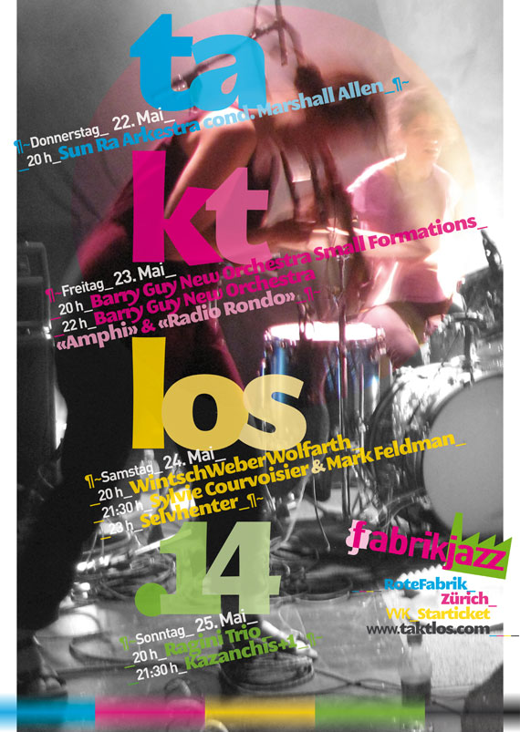

taktlos.14 ~ 30-Jahr-Jubiläum. ¶¶¶¶
| 22. Mai 2014 20:00 | bis | 24. Mai 2014 20:00 |
¶
¶
¶
¶~ Rote Fabrik _Zürich~ Aktionshalle_¶__¶¶¶¶
¶
¶
¶_ taktlos.14 _v i e r T a g e F e s t i v a l _¶_
¶_ Mit waghalsiger Musik zwischen den Genres und abseits des Mainstreams.~ Seit 1984. _¶_
¶
¶
¶
¶
¶~ E d i t o r i a l _¶_
¶
¶~Wir blicken auf 30 taktlose Jahre zurück, und das gleich an vier Tagen. Seit den ersten Tönen im orwellschen Jahr 1984 sind drei Jahrzehnte mit waghalsiger Musik zwischen den Genres und abseits des Mainstreams vorbeigezogen. Über tausend MusikerInnen waren bei den rund 260 Konzerten beteiligt, die an 87 Tagen stattgefunden haben. Das Taktlos ging während vieler Jahre neben Zürich auch in Bern und Basel über verschiedene Bühnen. Ende der neunziger Jahre haben die VeranstalterInnen in Bern den Schwerpunkt des Programms stärker auf die elektronische Musik, szenische Konzerte und Performances verlegt. Nachdem während einiger Jahre nur noch wenige Programmpunkte gemeinsam waren, wählte Taktlos Bern um die Jahrtausendwende den Alleingang. Die Zusammenarbeit mit Basel endete 2004 mit der Auflösung des Vereins, und nur drei Jahre später folgte Bern nach. Das hat die Programmierung für Zürich nicht einfacher gemacht.¶~
¶
Das Taktlos hat immer versucht – auch mit beschränkten Mitteln – innovative Tendenzen aufzuzeigen und gleichzeitig die Tradition zu pflegen. Dazu gehört auch der Kontakt zu MusikerInnen in aller Welt, von denen viele über die Jahre zu FreundInnen geworden sind.
Der grössere Teil der Bands wird über persönliche Kontakte verpflichtet, Agenturen vermitteln nur in seltenen Fällen. Es geht also weiter im Grenzbereich zwischen Jazz, komponierter, freier und improvisierter Musik. Zeitgenössische und kammermusikalische Ansätzen haben ihren Raum genauso wie Musique concrète, Rock und Punk. MusikerInnen lassen sich in einer globalisierten und digitalisierten Welt aus allen Quellen inspirieren, suchen nach neuen Verbindungen und loten sie aus. Dieses Jahr vermitteln zwei Grossformationen, ein Quintett, ein Quartett, zwei Trios und ein Duo Blicke auf und aus dieser Welt. Dabei beteiligen sich dreiundvierzig MusikerInnen aus den USA, der Schweiz, aus Dänemark, England, Schweden, Äthiopien, Belgien, Spanien, Deutschland, Holland,
Italien und Frankreich.¶~
¶
Mit dem Sun Ra Arkestra ist nach 2010 eine der wegweisenden Gruppen der Black Music erneut beim Taktlos zu Gast. Das hat einen besonderen Grund: Sun Ra, der spirituelle Leader der Band, feiert am 22. Mai, dem Eröffnungstag des Taktlos seinen hundertsten Geburtstag. Das ist Grund genug, dem Festival, das normalerweise drei Tage dauert, einen vierten voranzustellen. Aber es gibt noch einen zweiten: Marshall Allen wird am 25. Mai neunzig Jahre alt. Der Multiinstrumentalist übernahm 1996, nachdem Sun Ra am 30. Mai 1993 von der Erde auf Saturn gewechselt hatte, das Steuer der Arche. Seither lotst er sie kundig und mit grossem Elan durch die un-sicheren Zeiten.¶~
¶
Barry Guy, Bassist und Komponist des London Jazz Composers Orchestra, mit dem er 1988 und 1993 im Rahmen des Taktlos zu hören war, verspürt die unsicheren Zeiten ebenfalls. 2004 spielte er mit ähnlicher Instrumentierung, aber mit dem auf die Hälfte reduzierten neuen Barry Guy New Orchestra in der Roten Fabrik.Zehn Jahre später gehört auch diesen MusikerInnen ein ganzer Abend. In kleinen, spontan gebildeten Formationen zeigen sie ihr improvisatorisches Geschick, bevor sie in Orchester-grösse zwei Kompositionen von Barry Guy aufführen.¶~
¶
Der dritte Abend pendelt zwischen Improvisation und Komposition. Im Trio WintschWeberWolfarth sind zwei engagierte lokale Musiker beteiligt, die Nischen genauso pflegen wie die grossenBühnen. Das Piano-Violine-Duo Sylvie Courvoiser und Mark Feldman hat mit seinen kammermusikalisch-expressiven Klängen die Bühnen der Welt erobert. 2003 führten Courvoisier und Feldman ihr Masada-Programm mit Kompositionen von John Zorn auf. Jetzt sind sie mit eigenen Werken zu Gast. Zu den hier noch unbeschriebenen Blättern gehören Selvhenter aus Kopenhagen. Die fünf Frauen haben dort ein unabhängiges Künstlerkollektiv aufgebaut und spielen eine eigenständige, inspirierte und rockige Bricolage der Stile.¶~
¶
Am Sonntag streckt das Ragini Trio die Fühler nach Indien aus und mit Kazanchis+1 spielt eine Gruppe, die in Zürich und Addis Abeba ihre Wurzeln hat. Am vergangenen 1. August hat sie im Rahmen des Stadtsommers aufgespielt. Nun hat Kazanchis+1 erneut Gelegenheit,
das Publikum zum Tanzen zu bringen und so den Jahrgang 2014 des Taktlos zu beschliessen.¶~
¶
Das Taktlos lässt auch dieses Jahr viele neue Beziehungen entstehen. Von den dreiundvierzig beteiligten MusikerInnen treten einundzwanzig – also rund die Hälfte – erstmals im Rahmen des Taktlos auf. In früheren Jahren konnte man Johannes Bauer zehn-, Barry Guy sechs-, Evan Parker, Hans Koch und Paul Lytton fünfmal begegnen. Die restlichen
siebzehn waren ein- oder zweimal zu Gast. Vom Sun Ra Arkestra waren acht Musiker bereits 2010 mit von der Partie, und sechs MusikerInnen spielen in Zürich zum ersten Mal als Teil des Arkestra.¶~
¶
Fabrikjazz versucht seit den Anfängen in den achtziger Jahren, den MusikerInnen gute Bedingungen und den BesucherInnen anspruchsvolle Konzerte zu moderaten Preisen zu bieten. Ein unabhängiges Programm ist nur dank der Unterstützung der Stadt Zürich und des Kulturzentrums Rote Fabrik möglich. Auch dieses Jahr sind wieder Entdeckungen zu machen, Geheimnisse werden gelüftet, und für Überraschungen ist gesorgt. Das «Fest des flüchtigen Augenblicks» für neugierige MusikliebhaberInnen kann also nachhallen. Den abenteuerlichen und grenzüberschreitenden Experimenten gehört die Zukunft.¶~
¶
Fredi Bosshard, 14. April 2014,
Fabrikjazz Zürich~ ¶~~
¶
¶
¶
¶~ ~¶
{kind=link}
Gruezi,
dachte schreib mal ‘nen Kommentar. Als langjähriger Festivalbesucher (2004 war ich’s letzte Mal in Züri)wünsche ich euch weiterhin viel Erfolg, ihr hat immer gute Arbeit abgeliefert.Habe mich etwas von dieser Musik abgewandt, habe auch nach über 100 Festivals in 30 Jahren keine rechte Lust mehr. Also weiter so !
Salue
Rainer B. Feller